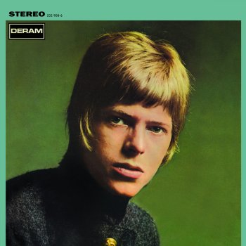

|  |
LetraSpace OddityDavid Bowie |
Ground Control to Major Tom
Ground Control to Major Tom
Take your protein pills and put your helmet on
Ground Control to Major Tom (Ten, nine, eight, seven, six)
Commencing countdown, engines on (Five, four, three, two)
Check ignition and may God's love be with you (Two, one, liftoff)
This is Ground Control to Major Tom
You've really made the grade
And the papers want to know whose shirts you wear
Now it's time to leave the capsule if you dare
This is Major Tom to Ground Control
I'm stepping through the door
And I'm floating in the most peculiar way
And the stars look very different today
For here am I sitting in my tin can
Far above the world
Planet Earth is blue
And there's nothing I can do
Though I'm past one hundred thousand miles
I'm feeling very still
And I think my spaceship knows which way to go
Tell my wife I love her very much, she knows
Ground Control to Major Tom
Your circuit's dead, there's something wrong
Can you hear me, Major Tom?
Can you hear me, Major Tom?
Can you hear me, Major Tom?
Can you hear-
And I'm floating around my tin can
Far above the Moon
Planet Earth is blue
And there's nothing I can do